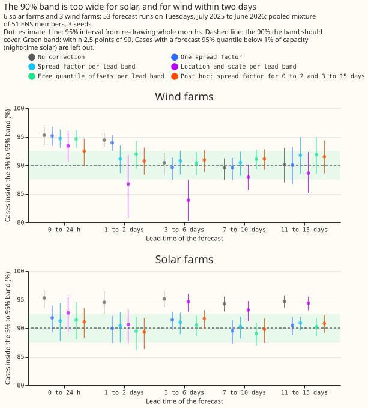
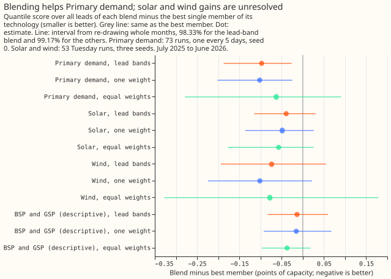

Calibration and uncertainty
On the 16 Primary substations, 6 solar farms, and 3 wind farms tested, correcting the spread of the forecast has gained little, and combining forecasts has gained more. A spread factor brought the solar 5% to 95% range from over-covering to about 90% coverage with no detectable change in accuracy, and no recalibration of the stored Primary substation quantiles passed its pre-registered tests. The gains that cleared their thresholds came from pooling ENS members for solar and wind farms, starting wind farms from the turbine power curve, and blending three stored forecasts for Primary substations. Every result rests on one validation year.

Figure 1: the uncorrected 5% to 95% range over-covers for solar in every lead band (a group of forecast lead times) and for wind in the first two days, and a spread factor corrects solar. Source: experiment 16.
Does it work?
Pooling the ERA5-trained quantiles over the ENS members beat an XGBoost model trained on ENS weather for solar and wind farms, and a stage 2 calibrator did not help. In experiment 2, the pooled mixture scored lower in CRPS by 0.62 points of capacity for wind (95% interval -0.99 to -0.26) and 0.24 for solar (-0.36 to -0.06), with the gain in the first six days. The stage 2 calibrator scored 0.40 worse than the mixture for solar (+0.26 to +0.61).
One spread factor brought solar's range to about 90% coverage with no detectable CRPS change. In experiment 16, solar coverage was 94.3% to 95.3% in every lead band before the factor and 89.5% to 91.8% after it (CRPS +0.006, 99.4% interval -0.004 to +0.024). Wind over-covered in the first two days only (95.3% and 94.4%), and no planned correction fixed that. A factor on two lead groups, chosen after seeing the results, reached 90.7% to 92.5% and changed the CRPS by -0.021 (-0.042 to -0.002), a small gain.
For wind, the base margin carries the CRPS gain, and the spread factor is a coverage fix. In experiment 20, the margin lowered the wind CRPS by 0.055 (99.58% interval -0.110 to -0.007), the spread factor alone by 0.021 (-0.043 to -0.002), and both by 0.071 (-0.133 to -0.014). The factor's extra -0.016 over the margin (-0.036 to +0.004) is not detectable. No change helped solar detectably, and the full combination for solar was 0.035 higher (-0.075 to +0.116), an interval that includes zero.
No recalibration of the stored Primary substation quantiles passed the pre-registered tests. In
experiment 97, the
weekly-refitted forecast of BG2 covered its q05 (the quantile at level
0.05) at 0.035 and its q95 at 0.938 at 12 to 36 hours lead, where 0.05 and 0.95 are nominal, and
covered the median at 0.45. The tail test needed q01, q05, q95, and q99 within 0.01 of nominal at
both the 16 Primary substations and 4 bulk and grid supply points. For example, the arm that scaled
per level, lead band, and class gave Primary q95 coverage of 0.9397 and supply-point q95 coverage of
0.9248. The verdict is refuted, but 9 scored months are too few to separate a real improvement
from noise. An arm that replaced the stored tails with fitted Pareto tails lowered the quantile
score for Primary substations at 12 to 36 hours by 0.00009 (95% interval -0.00015 to -0.00001,
against a stored 0.01882 on the scale that experiment prints) and failed the tail test.
Averaging the quantiles of three stored forecasts lowered the Primary substation quantile score by
about 0.1 points, and the solar and wind gains were unresolved. In experiment
35, the lead-band blend of the
monthly-refitted N1, a7_cs (an XGBoost model with seven weekly-analogue
columns), and the stack scored 5.025 against 5.122 for the best of the
three (quantile score -0.097, 98.33% interval
-0.187 to -0.026). One fixed weight vector, the simpler arm, scored 5.020, and the two differ by
+0.005 (-0.008 to +0.023). The blend was not scored against BG2. The solar (-0.039) and wind
(-0.074) intervals include zero.

Figure 2: blending lowers the Primary substation quantile score, and the solar and wind gains are unresolved. Negative values are better. Source: experiment 35.
A loss based on the CRPS of the pooled members recovered about half of the harm that extra members
do to the pinball loss at 16 Primary substations. In Experiment
99, 6 members per
run cost the pinball loss 0.075 points (5.622 against 5.547 for the control
member alone), and the CRPS loss beat the pinball loss on the
same rows by 0.039 (95% interval -0.057 to -0.018), a small gain. Against the control-member
recipe the CRPS arm was +0.036 (-0.022 to +0.111), so the pilot cannot say which is better.
A zero starting value gave no detectable gain for Primary substations or solar farms. In
experiment 80, the differences
were -0.017 (98.75% interval -0.072 to +0.054) for Primary substations and -0.010 (-0.036 to +0.028)
for solar farms, and the verdict is inconclusive. The wind models that serve already receive a
base margin, so a zero start changes nothing there. Wind models without a margin were worse by
+0.049 (95% interval +0.032 to +0.065).
Training with lags hidden at random did not widen the 5% to 95% band where a lag is missing. In
experiment 100, on 37,394 real
half-hours with a missing lag (an earlier power reading) at 16 Primary substations, the band covered
0.799 for the plain XGBoost model and 0.802 for the model trained with lags hidden in 10% of rows,
against a nominal 0.90. The verdict is inconclusive.
Best design so far
These are the best of the recipes tested in this theme, and the experiments did not score them
against each other. For Primary substations, the best tested is the one-fixed-weight blend of the
monthly-refitted N1, a7_cs, and the stack, which experiment
35 scored against its own
members and not against BG2. For solar and wind farms, the best tested is the pooled mixture with a
spread factor for solar and a base margin for wind. Experiments 16 and 20 found no detectable solar
CRPS gain over the pooled mixture.
Candidates for production
Four experiments have production_status: candidate, none is adopted, and a model release plan
decides whether any is ported.
- experiment 2, pooled mixture: pool the ERA5-trained quantiles over the ENS members for solar and wind.
- experiment 16, solar spread factor: scale the solar mixture's quantiles by one fitted factor.
- experiment 20, wind base margin: add the power-curve base margin to the wind stage 1a model, which lowered the CRPS by 0.055.
- experiment 35, Primary substation blend: serve a fixed-weight average of the quantiles of three forecasts, one of them refitted monthly. It was -0.102 against the best member (interval -0.201 to -0.025) and was not scored against BG2.
Gotchas and implementation details
Report the pooled mixture beside any calibrator. Without it, a calibrator that is worse than pooling can look like a gain over an ENS-trained model (experiment 2). Re-check if the calibrator gets new inputs, such as lagged power, which experiment 5 found helpful for 16 Primary substations.
Fit each correction only on data from valid times (the times a forecast is for) before the first run it corrects, and expect early months to stay uncorrected. A fit that sees later outcomes flatters the correction. Experiments 16 and 97 fitted each correction only on valid times before the first run it corrected, and the arm of experiment 16 with a spread factor per lead band needed 5,000 earlier non-trivial cases (cases whose uncorrected 95% quantile exceeds 1% of capacity), so the wind 0 to 24 hour band was fitted in only 3 months and the 1 to 2 day band in 8. Re-check if the validation period or series count grows.
Compute solar coverage on non-trivial cases only. Night-time zeros sit inside every range and inflate coverage, so experiment 16 left them out. Re-check for a series that is not zero at night.
Refit each arm's own spread factor on that arm's own earlier cases. A factor fitted for other quantiles does not fit (experiment 20). Re-check if the quantiles come from an XGBoost model that experiment did not stack.
Score tail coverage and pinball loss at q01, q05, q95, and q99, count exceedances (measured values beyond a tail quantile), and keep the stored quantiles at all 11 levels. Nine scored months gave intervals of plus or minus 0.02 on q95 coverage, wider than the 0.01 bar, and cells with fewer than 30 days holding an exceedance were untestable (experiment 97). Re-check once 2 years of scored runs exist.
Test a starting value only on XGBoost models without a base margin. A base margin makes XGBoost ignore its base score, so a zero start changed nothing on the wind model with the margin (experiment 80). Re-check if the XGBoost version or objective changes.
Run a repeat fit to measure the noise floor of GPU XGBoost. Fits are not bit-reproducible: repeat fits of one 500-round model scored +0.004 apart at Primary substations and -0.007 at grid supply points, above the 0.001 tolerance and well below the intervals (experiment 80). Re-check on a different GPU or XGBoost version.
Hold the refit schedule fixed within a contrast. The CRPS-loss arms refit monthly with 150 rounds and scored 0.19 to 0.23 points above BG2's weekly stage, which probably reflects the schedule, so their absolute scores cannot be set beside it (experiment 99). Re-check if either schedule changes.
Pool pinball-trained quantiles with equal weights, not the CRPS atom masses. The CRPS gives each of the 11 quantiles a probability mass (0.02 at q01 and q99, 0.26 at q25 and q75), and pooling with those masses scored 0.025 points worse (experiment 99). Re-check if the pinball arm is replaced by a CRPS-trained one.
Apply the 14-day correction to each member before blending, and leave the monthly-refitted N1 uncorrected. Correcting the blend afterwards scored 0.048 points worse (95% interval +0.008 to +0.101), but that contrast favours the corrected-first arm, whose weights were chosen on its own scores, and correcting N1 too scored 0.135 worse than the headline blend (experiment 35). Re-check if the members change.
What we have not settled
Whether a calibrator that sees recent power helps solar and wind farms is untested, although experiment 5 found it helped Primary substations. The wind two-group spread factor has not been tested on another year. experiment 99 suggests a tail-specific spread factor, or pooled-member spread statistics as input columns, for the Primary tails. Experiment 100 names an input column that flags a missing lag as an untested way to widen the band where a lag is missing. The blend gains for solar and wind may exist on more than 6 solar farms and 3 wind farms. Tracking the month-to-month swing in Primary tail coverage needs at least 2 years of scored runs. The Research plan lists what is planned next, and the Experiments page lists every experiment tried.